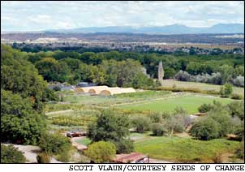
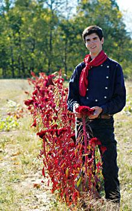
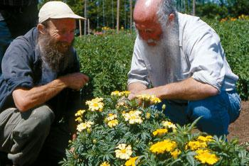
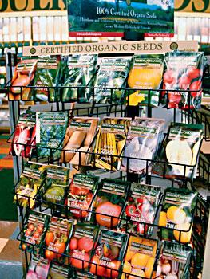
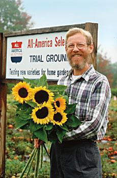

Twenty years ago, it was virtually impossible to buy organically grown seeds. Among the more readily available seeds, many varieties were treated with toxic fungicides that commercial growers - and most gardeners - thought were essential to success. But today we know better, and so does a new generation of seed sellers. Companies such as High Mowing Seeds and Seeds of Change offer all organically grown seeds, and other companies, such as Baker Creek Heirloom Seeds, specialize in nonhybrid heirloom varieties, which often excel in flavor and nutrition. Even the largest and oldest seed companies, such as Burpee, Park, Harris and Ferry-Morse, are adding more organic seeds and heirloom varieties to their offerings. This trend also extends to the retail racks of Botanical Interests and other companies that sell seeds in stores.
We surveyed the current garden seed catalogs and chose 20 companies for the 2005 Sustainable Seeds Honor Roll. You’ll find a wealth of exciting varieties and great advice in these catalogs, and most of them are free for the asking. Here’s a closer look at three of those companies in Maine, New Mexico and Missouri. Taken together, they tell an interesting story of where the seed industry has been, how far it has come and where the future of garden seeds is going.
The current trend toward sustainable seeds comes as no surprise to Rob Johnston Jr., founder and chairman of the 32-year-old Johnny’s Selected Seeds. From its first 16-page seed list, Johnny’s has grown into a thriving company that now offers 150-page color catalogs and employs more than 80 people on 40 certified organic acres in central Maine.
“There’s always potential in any business for new enthusiasm, and specifically in the seed business,” Johnston says. Early on, working on a tight budget, Johnston opted to channel his enthusiasm into breeding squash and pumpkins - high-nutrition niche crops. This year’s retail catalog lists eight pumpkin varieties developed by the Johnny’s team, 13 squash varieties - including ‘Bonbon’ buttercup, a 2005 All-America Selections (AAS) winner - and ‘Diva’ cucumber (AAS 2002). The latter owes its creation to breeding work done by Johnston’s wife, Janika Eckert. Over the years, Johnny’s has accumulated an impressive list of AAS winners, including bright-orange ‘Sunshine’ winter squash; beautiful, multicolored ‘Bright Lights’ Swiss chard; and ‘Baby Bear’ pumpkin with thick, pie-worthy flesh and roastable seeds.
Johnston opened his seed business after working at a natural foods co-op and as a market gardener. His company’s listings still reflect that market gardening background - he includes herbs, green manure crops, ornamental grasses and long-stemmed flower varieties sought by cut-flower growers.
His special interest in grains shows, too. “I’ve had my own flour mill for 25 years,” Johnston says. One of his favorite grains is ‘Polk’ spring wheat - a high-gluten variety that makes great pancakes and wonderfully crusty bread - which is also available through the catalog.
Many of Johnny’s varieties are hybrids, chosen for special characteristics such as earliness (crucial in Maine) and disease resistance. Almost all of Johnny’s varieties are untreated (meaning the seeds are not coated with synthetic fungicides), and more than 100 are organically grown.
And then there is Johnston’s philosophy on service, which motivates his staff to send orders out within hours after they come in.
“It doesn’t take much more work to stay caught up than it does to get a couple of weeks behind and hold it there,” he says. “So why not stay caught up?”
While Johnny’s has evolved slowly for more than 30 years, a very different seed company, Seeds of Change, took off like a rocket 10 years ago. In addition to the largest all-organic garden seed listing in America (83-page catalog that lists more than 600 varieties of open-pollinated, organically grown vegetables, herbs, fruits and flowers), its orbit now includes certified organic foods sold in supermarkets and health food stores around the world and a six-acre research farm near Santa Fe, N.M
In a roundabout way, the fuel for the Seeds of Change rocket came from candy bars that have been around since 1911, when Frank and Ethel Mars created the first Mars bar in their Tacoma, Wash., kitchen. The Seeds of Change company, which its visionary founders, Gabriel Howearth, Kenny Ausubel, Nina Simons and Alan Kapuler, hoped would become the first all-organic seed company in the United States, got its start in 1989, but struggled to get off the ground. It had talent, expertise and commitment, but was crunched for cash.
“I guess starting a seed company was an absurd thing to do at the end of the 20th century,” says Howard Shapiro, an early investor and now the vice president of agriculture for the company. “We needed a business partner, and we had to find more like-minded people.”
This problem was clear to 22-year-old Stephen Badger, who worked with Shapiro for more than a year, helping recruit new farmers to grow organic seed, calling every farmer he knew from working on area organic farms and at the People’s Food Co-op in Portland, Ore
Soon thereafter, Badger decided it was time to commit. Bringing in the vast resources of his family’s business, Mars, he provided capital and business expertise to move Seeds of Change onto the fast track. Badger now keeps a low personal profile but maintains a high ethical influence within the company.
“If done with integrity, business can be a great thing for the environment,” he says. “If done with a conscience, business can be a force for good.”
It is hard to browse through the Seeds of Change catalog without agreeing that a force for good is flourishing within the company. For the past eight years, Rodale Institute veteran Steve Peters has been orchestrating the work of more than 50 organic seed growers. “They’re the unsung heroes, the heart and soul of Seeds of Change,” Peters says. “There’s always been a sense that anything was possible. Not only were we helping to preserve something invaluable, but we were, and still are, creating something truly significant that is bigger than any of us.”
That significance is now symbolized by the easy availability of previously unknown crops ranging from amaranth, an ancient grain species revered by the Aztecs, to yacon, a Bolivian root crop related to sunflowers that bears clusters of sweet, crunchy tubers.
Jeremiath Gettle was 7 years old in 1987 when he began collecting seeds, 16 when he joined Seed Savers Exchange and 18 when he sent his first catalog - a 12-page list of 70 varieties - to 550 customers. The next year, 1999, Gettle’s fledgling company, Baker Creek Heirloom Seeds, spread from one room in his home to the entire second floor. In 2000, he built a 2,000-square-foot store, which has expanded twice since then. This year, he expects to send out 70,000 catalogs - offering more than 1,000 varieties - and he will employ 15 people at peak season.
Such success isn’t bad for a guy who started with an interest in heirloom poultry and then became alarmed when he saw how quickly irreplaceable vegetable and flower varieties were disappearing. “We’re trying to preserve things that are different, like white cucumbers and yellow watermelons,” Gettle says. “We’re also trying to preserve ethnic varieties from remote cultures that are facing pressures to give up what they have.” He has traveled to Thailand, Cambodia and Mexico in search of near-extinct seed varieties.
There’s a spirit of generosity flowing through Baker Creek, which may spring from the support Gettle received when he decided to start his company. Glenn Drowns, Kent Whealey and others who work with the Seed Savers Exchange helped Gettle, and now he is eager to help other young companies that share his preservation goals.
“They have varieties we don’t have, and the main thing is to keep people growing these varieties. We all need to work on saving seeds and keeping our food supply as safe as possible,” he says. “Grow what you can, and buy locally whenever you can, too. That keeps our food supply in farmers’ hands.”
Gettle says he has been challenged to meet the technical demands of his fast-growing business, but he’s had little difficulty finding growers to supply seeds. He uses two acres of his own land for seed production and a neighbor has put 15 acres into production for him. Other growers for Baker Creek are scattered from Maine to California.
“One of the side benefits of having all these farmers growing things for you is that you get good food,” Gettle says.
To spark enthusiasm among his growers, customers and the public, Gettle stages Baker Creek festivals at his farm where those who attend can share gardening stories and seeds, and have a good time. At this year’s Spring Planting Festival in April, exhibitors will show such items as portable solar panels and handmade herbal soaps, as well as their produce. Gettle says he even expects a display of restored covered wagons, including a functioning 100-year-old chuckwagon from Texas.
Seed companies are as diverse as gardens and gardeners, which brings us to the power of choice. When you choose seeds, you are choosing more than a variety. You’re choosing to support a company that shares your values. You’re choosing what you’ll eat for dinner - over and over again. Perhaps you’re choosing a starting point for selecting a strain that is uniquely adapted to your back yard. Well-chosen seeds are the channel through which Mother Nature’s healthful energy will flow easily and naturally through your hands and your garden, onto your table and into your body, helping you create your own circle of sustainability.
Bryan Welch and Jean English contributed to this article Barbara Pleasant is a veteran Mother Earth News contributing editor and award-winning book author. She lives in the mountains of western North Carolina
Hybrid seeds are becoming more available as organically grown or untreated, but even when the seeds are clean, hybrids have a drawback for home gardeners. If you grow seeds produced by hybrids - which are planned crosses between different parents - the likely result is plants that resemble their grandparents rather than the plants that produced them. This is often a step backward in crop quality.
Open-pollinated (nonhybrid) varieties are much more genetically stable, and they stand a good chance of improving from one generation to the next if you save seeds from your most vigorous plants, or if you select for additional characteristics, such as earliness, flavor, color or superior tolerance to heat or cold. Best of all, when you save seeds from your best open-pollinated plants, you are on your way to developing a variety with the best adaptation to the unique soil and climate in your garden.
Don’t be intimidated by the prospect of saving seeds - it really is a rewarding and fun activity. For the nuts and bolts of saving seed, read Mother’s Handbook - go to www.MotherEarthNews.com/arc/1286/
Seeds Honor Roll
These seed companies all offer a good, varied selection of open- pollinated vegetable and flower seeds, as well as untreated and/or organically grown seeds. All share a commitment to refrain from knowingly selling genetically modified varieties. These companies also have earned very high ratings for customer service, in the database maintained by Garden Watchdog (www.davesgarden.com/gwd). Be sure to check out companies close to home to find regionally adapted varieties. (New laws restrict the shipping of seeds between the United States and Canada, so if your order could be affected, be sure to check with the seed company.)
1. Baker Creek Heirloom Seeds
2278 Baker Creek Road
Mansfield, MO 65704
(866) 653-7333
www.rareseeds.com
2. Bountiful Gardens
18001 Shafer Ranch Road
Willits, CA 95490
(707) 459-6410
www.bountifulgardens.org
3. Cook’s Garden
P.O. Box 5030
Warminster, PA 18974
(800) 457-9703
www.cooksgarden.com
4. FEDCO Seeds
P.O. Box 520
Waterville, ME 04903
(207) 873-7333
www.fedcoseeds.com
5. Heirloom Seeds
P.O. Box 245
W. Elizabeth, PA 15085
(412) 384-0852
www.heirloomseeds.com
6. High Mowing Organic Seeds
813 Brook Road
Wolcott, VT 05680
(802) 888-1800
www.highmowingseeds.com
7. Johnny’s Selected Seeds
955 Benton Ave
Winslow, ME 04901
(800) 854-2580
www.johnnyseeds.com
8. Natural Gardening Co
P.O. Box 750776
Petaluma, CA 94975
(707) 766-9303
www.naturalgardening.com
9. Nichols Garden Nursery
1190 Old Salem Road NE
Albany, OR 97321
(800) 422-3985
www.nicholsgardennursery.com
10. Peaceful Valley Farm Supply
P.O. Box 2209
Grass Valley, CA 95945
(888) 784-1722
www.groworganic.com
11. Salt Spring Seeds
Box 444, Ganges
Salt Spring Island, BC V8K 2W1
(250) 537-5269 (inquiries only)
www.saltspringseeds.com
12. Seeds of Change
P.O. Box 15700
Santa Fe, NM 87592
(888) 762-7333
www.seedsofchange.com
13. Seed Savers Exchange
3076 North Winn Road
Decorah, IA 52101
(563) 382-5990
www.seedsavers.org
14. Seeds for the South
410 Whaley Pond Road
Graniteville, SC 29829
Fax: (803) 232-1119
www.seedsforthesouth.com
15. Seeds Trust
4150 B Black Oak Drive
Hailey, ID 83333
(208) 788-4363
www.seedstrust.com
16. Southern Exposure
Seed Exchange
P.O. Box 460
Mineral, VA 23117
(540) 894-9480
www.southernexposure.com
17. Sow Organic Seed Co
P.O. Box 527
Williams, OR 97544
(888) 709-7333
www.organicseed.com
18. Territorial Seed Co
P.O. Box 158
Cottage Grove, OR 97424
(800) 626-0866 www.territorial-seed.com
19. Underwood Gardens
1414 Zimmerman Road
Woodstock, IL 60098
(815) 338-6279
www.underwoodgardens.com
20. Victory Seeds
P.O. Box 192
Molalla, OR 97038
(503) 829-3126
www.victoryseeds.com
• Catalog Web sites can be difficult to navigate, but you’ll find Nichols Garden Nursery (www.nicholsgardennursery.com) offers very helpful icons that make it impossible to get lost. The search function works well, and there’s a nice section of weekly gardening tips and recipes.
• Looking for inspiration? The Seed Savers Exchange site (www.seedsavers.org) has the best plant photos on the Web, with photos that literally do the work of 10,000 words. The site is neither too small nor too large, and the search function is really smooth.
• Don’t go to the Cook’s Garden site (www.cooksgarden.com) unless you’re hungry because the food ideas laced into the variety descriptions will make your mouth water. Something as simple as selecting mesclun seeds can turn into an irresistible urge to try a new salad with baked chevre.
• Organic seeds get their own icon at the Web site for Territorial Seed Co. (www.territorial-seed.com). The plant photographs are lovely, and no matter where you go, the search option never leaves the screen. I’ve always liked this company’s dense catalog, but I like its Web site even more because it’s so clean and simple
• No question about seed saving goes unanswered at the High Mowing Seeds Web site (www.highmowingseeds.com), where you can link to crop-specific growing and seed-saving information in a click. It’s also easy to jump from one crop to another
|
 Scott Vlaun/Courtesy Seeds of Change The Seeds of Change research farm near Santa Fe, N.M. |
 Andrew Kaiser/Courtesy Baker Creek Heirloom Seeds Jeremiath Gettle of Baker Creek Heirloom Seeds. |
 Scott Vlaun/Courtesy Seeds of Change Alan Kapuler and Howard Shapiro of Seeds of Change. |
|
 Umut Newbury Many companies now offer organic and heirloom seeds at retail racks in stores. |
 Peter Nutile/Courtesy Johnny's Seeds Rob Johnston Jr. of Johnny's Selected Seeds. |
|